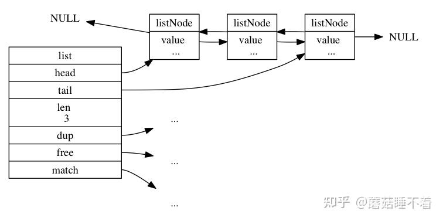
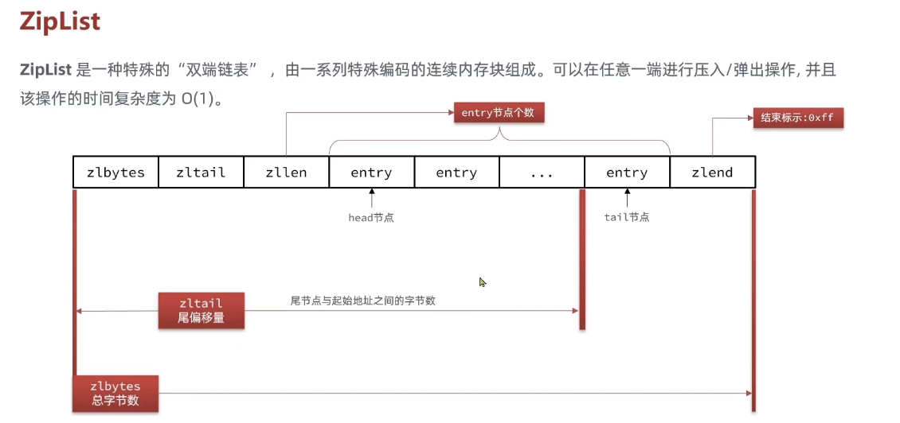

数据结构
Introduce
我们的 value 的类型中的底层实现，就是利用一些内置的数据结构来实现的
下面来介绍一下 Redis 中的一些底层数据结构
数据结构
SDS 简单动态字符串
在C语言中，默认是没有字符串类型的，只有 char*,这样子获得字符串长度都需要遍历一遍，所以 Redis 自己实现了一个动态字符串类型 SDS 来存储字符串。
它的本质是 C语言 中的一个结构体，具体如下:
1 2 3 4 5 6 7 8 9 10 11 | |
能够支持多种类型的字符串,其实也是利用了空间来换取时间。我们不需要直接的遍历整个字符串来获取长度，而是直接的通过 len 来获取长度。
- 如果新字符串小于 1M，则新空间就会拓展字符串长度的两倍 +1
-
如果新的字符串大于 1M，则新空间为扩展后的字符串长度+1M+1 内存预分配
-
获取字符串长度的时间复杂度为 \(O(1)\)
- 二进制安全
- 减少内存分配次数
- 支持动态扩容
InSet
InSet 是Redis中set集合的一种实现方式，基于整数数组来进行实现，并且具备长度可变，有序的特征。
1 2 3 4 5 6 7 8 9 10 11 12 | |
我们对于 contents 的大小是由 encoding来决定的。
InSet 的元素是有序的，但是不支持重复元素的插入。统一编码原则就是为了方便来进行寻址。
InSet 的扩容，当出现插入的元素已经在 Inset 编码规定的大小之外:
- 那么就会升级一种编码方式
- 并且倒序的将原来的数据拷贝到新的
Inset中。也就是先将最后面的元素进行拷贝，然后再将前面的元素进行拷贝。 - 将最后的元素进行插入
Dictionary
我们根据键实现快速的增删改查，键与值的映射关系用Dict来实现。
它是由三部分组成的:
DictHashTable哈希表DictEntry哈希节点Dict字典
1 2 3 4 5 6 7 8 9 10 11 12 13 14 15 16 17 18 19 20 21 22 23 24 25 26 27 28 | |
Redis 先根据Key计算出 hash 值(h),然后利用 h&sizemask 来计算出索引值。
其实有点像Java中的HashTable的实现方式类似。
为什么需要两个 HashTable就是因为为了在 rehash 的时候进行数据的迁移使用。
Redis 发生Hash冲突的时候 使用的是 头插法，也就是将冲突的新节点放到链表的头部，这样子可以减少冲突的概率。
ReHash 的过程:
Rehash 的过程是渐进的，也就是说不是一次性的。而是分多次的，因为当数据量大的时候，如果一次性的进行迁移会造成服务器的阻塞。因为 我们有一个 rehashidx** 的坐标作为标识来维护这个是否仍然在Rehash. 会在每一次进行对这个字典的 添加、删除、查找、更新的操作的时候，顺带将rehashidx索引上的所有键值对rehash到ht[1]，然后
rehashidx+1
-
为 ht[1] 哈希表分配空间，这个哈希表的空间大小取决于执行的操作:
- 如果是扩展操作，
ht[1]的大小为第一个大于等于ht[0].used*2的\(2^n\) - 如果是执行的是收缩操作，那么
ht[1]的大小是第一个大于等于ht[0].used的\(2^n\)
- 如果是扩展操作，
-
将保存在
ht[0]的所有简直对rehash到ht[1]上 -
释放
ht[0],并且将ht[1]设置为ht[0],并且将ht[1]设置为NULL -
如果服务器执行了
BGSAVE或者BGREWRITEAOF命令，并且此时的负载因子大于等于1，那么就会进行rehash -
或者负载因子大于5，并且在执行上述的命令的。
Linked-List

对于链表，就比较简单了 发布与订阅，慢查询、监视器等功能 也会用到了链表。Redis服务器本身还是用了链表来存储多个客户端的状态信息，以及使用了链表来构建客户端的输出缓冲区。
1 2 3 4 5 6 7 8 9 10 11 12 13 14 15 16 17 18 19 20 21 22 23 24 25 26 27 28 29 30 31 | |
简单的来说就是底层的链表是一个双向链表，还有个特性是多态，就是通过 list 结构的 dup,free,match 三个属性为节点值设定特定类型的函数，所以链表可以用于保存不同类型的值。
SkipList
跳表是一种有序的数据结构，它通过每个节点中维持多个指向其他节点的指针，从而达到快速访问某些节点的目的。而且大部分情况下，跳表是能够和平衡树媲美的，并且跳表的实现要比平衡树来的简单。
用途:
- 实现有序集合键
- 集群节点中用作内部数据结构
1 2 3 4 5 6 7 8 9 10 11 12 13 14 15 16 17 18 19 20 21 22 | |
幂次定律，越大的数出现的概率越小，选择了给每个节点随机生成一个 0~32 大小的数组来作为 level
zipList

压缩列表，主要是Redis为了优化内存使用而设计的一种紧凑的数据结构，用来存储少量元素的 列表键 和 哈希键 的底层实现。
核心思想就是 通过连续内存布局和特殊的编码，减少指针和元数据的内存开销，从而在小数据场景下显著节省内存。可以堪称看成一种 特殊的双向链表
压缩表的组成:
zlbytes: 保存整个压缩列表的长度zltail: 保存压缩列表的尾节点的偏移量zllen: 保存压缩列表的长度
zipList 中的每个entry的内存大小是不固定的，它的大小是由entry的内容决定的，所以它的内存大小是不固定的。
1 2 3 4 5 6 7 8 9 | |
因为是利用地址偏移来获取下一个节点的地址，所以我们对于比较小的数据来说吗，它的效率是比较高的。而且它的内存是连续的，所以查询也会比较快。但是如果当数据比较大的时候，它的效率就会比较低了。因为是通过遍历每一个节点来获取下一个节点的地址，地址偏移，所以它的时间复杂度是 \(O(N)\)
Encoding 编码
-
字符串 ->
00,01,10开头，则证明content00-> 1字节01-> 2字节10-> 5字节
-
整数 ->
11开头11000000-> int16_t 2 字节11010000-> int32_t 4 字节11100000-> int64_t 8 字节11110000-> 24位整数11111110-> 8位整数1111xxxx-> 4位整数
但是 事实上 Redis 7.0 压缩列表已经废弃了，因为它的性能不是很好，所以在新的版本中已经不再使用了。改成了listPack的底层实现。
ListPack
在 Redis5.0 中已经不适用 zipList了，而是使用listPack,进行的改动是 每个 entry 不再保存的是前一个节点的len,而是保存了本身的这个节点的len了，虽然看起来优化不那么大，其实比较重要的优化就是 在进行插入/删除操作的时候，就不用严重的依赖前一个节点的更新了，只用保存当前变化的节点的数据即可。
Questions:
Q1 为什么 Redis 中使用跳表，而不是使用B+Tree呢？
-
内存结构与访问模式的差异
- B+Tree 是属于磁盘友好型，目的是优化磁盘I/O,通过减少树的高度来降低磁盘的寻址次数。
- 节点填充率比较高
-
范围查询高效
-
Redis中的SkipList,通过多级索引来加速查询，内存访问的模式更符合CPU的缓存局部性(指针跳跃更少)
- 简单灵活：插入/删除时仅需要调整局部指针
- 概率平衡，避免了严格的平衡约束，实现更简单
-
实现复杂度的对比
- B+Tree的实现复杂度更高，需要考虑平衡性，节点分裂与合并等操作
- SkipList的实现更简单，只需要考虑插入与删除操作，对于Redis这种追求高性能和代码简介的项目，跳表的低实现复杂度更具吸引力
-
查询性能
- 单表查询：跳表和B+Tree的查询性能相差不大，但是跳表的实际查询常数会更小，因为在内存中的操作是要快于磁盘的。
- 范围查询，B+Tree的范围查询更高效，因为B+Tree的叶子节点是有序的，可以通过范围查询的方式来获取数据。但是跳表支持双向链表，所以也是能够稍微高效的支持
ZRANGE操作的
-
写入性能
- B+Tree 插入可能会触发节点分裂，有较高的维护成本
- 跳表插入只需要调整局部指针，维护成本更低
-
内存占用
- B+Tree的节点结构更复杂，占用更多的内存
- 跳表的节点结构更简单，占用更少的内存
String 是使用什么保存的？为什么不适用C语言中的字符串？
是使用 Redis 新建的数据结构，SDS(Simple Dynamic String)来进行保存字符串，好处就是：
-
二进制安全，因为在C语言中的字符串的末尾都是 '\0'作为终止符，倘若如果存在某个字符串存于缓存的时候，也是这样存储，那么就会导致二进制不安全，会出现取
value的时候会出现遗漏的情况。 -
方便直接读取字符串的长度，因为
char*类型如果想要获得字符串的长度，我们需要直接的遍历整个字符数组，从而导致在获取长度的时候，需要 \(O(N)\)的时间复杂度。 -
这个是我没想到的: 避免缓冲区溢出，因为在
SDS这个数据结构中，会有一个alloc的成员变量，好处就在于因为我们也存了len这个成员变量，所以可以通过比较这两个值来判断是否需要进行扩容，从而避免了缓冲区溢出的情况。